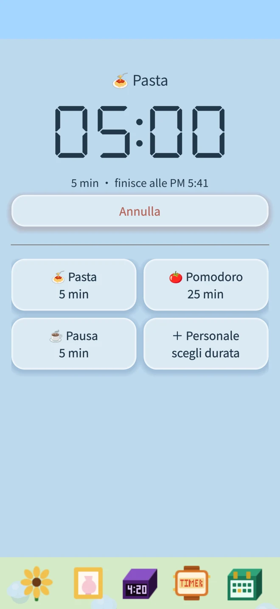
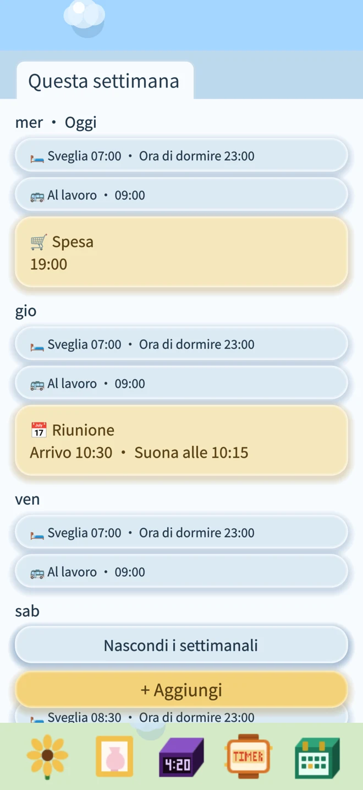
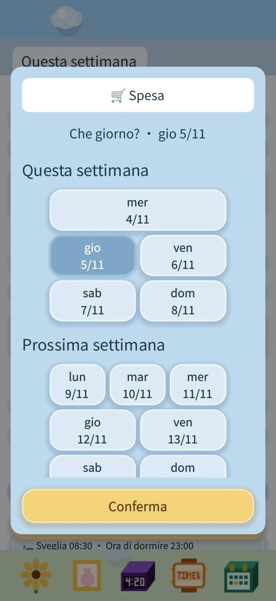
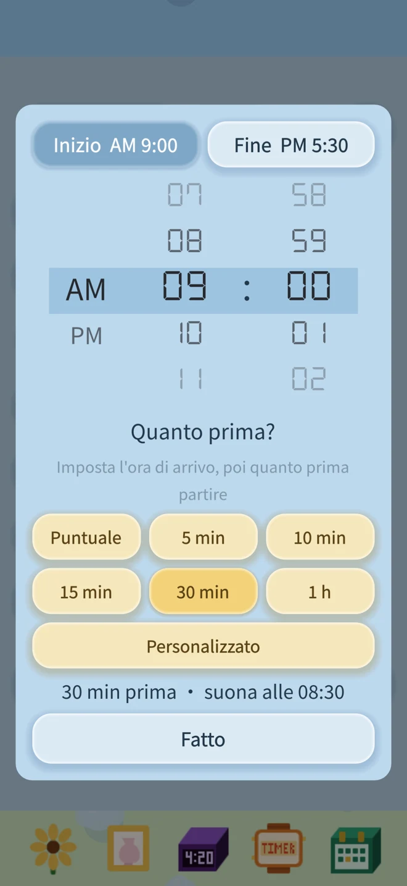

Timer: salva le durate preferite e riutilizzale
Pasta, tè o una pausa: scegli un modello e conferma per avviare il timer.
Salva nomi e durate personalizzati per riutilizzarli.

Timer, impegni e un fiore tutto tuo.
Niente pubblicità. Niente abbonamenti. Non serve Internet. È tutto tuo.
Sveglie, promemoria e progressi del fiore restano sul tuo dispositivo.
Scarica su App StorePasta, tè o una pausa: scegli un modello e conferma per avviare il timer.
Salva nomi e durate personalizzati per riutilizzarli.

Questa settimana, la prossima e oltre: tutti gli impegni ordinati per settimana. I promemoria blu si ripetono ogni settimana, quelli gialli suonano una volta sola.



Un fiore tutto tuo
Scegli un girasole o un’orchidea e abbina il vaso che preferisci. Trascina l’annaffiatoio per dare acqua e il concime per nutrire il fiore.
Se resta troppo a lungo senz’acqua, abbassa la testa. Con un po’ d’acqua si riprende.
Anche sulla schermata di blocco
Usa le sveglie di sistema di iOS 26 e richiede la tua autorizzazione. Dopo il consenso, possono suonare anche in modalità silenziosa.
Il conto alla rovescia può apparire sulla schermata di blocco e nella Dynamic Island dei modelli compatibili. Allo scadere del timer ricevi una notifica.
Imposta la sveglia di domani. Annaffia il fiore di oggi.